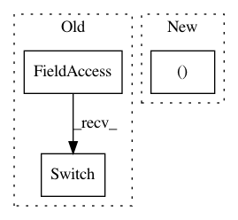

d3fba39499378674d9240a35b3410457d6aed4c6,model/crf.py,CRFLoss_vb,forward,#CRFLoss_vb#Any#Any#Any#,271
Before Change
cur_values = cur_values + partition.contiguous().view(bat_size, self.tagset_size, 1).expand(bat_size, self.tagset_size, self.tagset_size)
cur_partition = utils.log_sum_exp(cur_values, self.tagset_size)
// (bat_size * from_target * to_target) -> (bat_size * to_target)
partition = utils.switch(partition, cur_partition,
mask[idx].view(bat_size, 1).expand(bat_size, self.tagset_size)).view(bat_size, -1)
// the following two may achieve higher speed, but raise run-time error
// new_partition = partition.clone()
After Change
cur_partition = utils.log_sum_exp(cur_values, self.tagset_size)
// (bat_size * from_target * to_target) -> (bat_size * to_target)
// partition = utils.switch(partition, cur_partition, mask[idx].view(bat_size, 1).expand(bat_size, self.tagset_size)).view(bat_size, -1)
mask_idx = mask[idx, :].view(bat_size, 1).expand(bat_size, self.tagset_size)
partition.masked_scatter_(mask_idx, cur_partition.masked_select(mask_idx)) /ǖ for partition, 1 for cur_partition
//only need end at end_tag
In pattern: SUPERPATTERN
Frequency: 3
Non-data size: 3
Instances
Project Name: LiyuanLucasLiu/LM-LSTM-CRF
Commit Name: d3fba39499378674d9240a35b3410457d6aed4c6
Time: 2017-11-27
Author: llychinalz@gmail.com
File Name: model/crf.py
Class Name: CRFLoss_vb
Method Name: forward
Project Name: rodluger/starry
Commit Name: 141903a21846d54aaf09aa95a3bcdd8b673ee116
Time: 2019-02-05
Author: rodluger@gmail.com
File Name: starry/ops/theano_op.py
Class Name: StarryOp
Method Name: perform
Project Name: rodluger/starry
Commit Name: 141903a21846d54aaf09aa95a3bcdd8b673ee116
Time: 2019-02-05
Author: rodluger@gmail.com
File Name: starry/ops/theano_op.py
Class Name: StarryGradOp
Method Name: perform